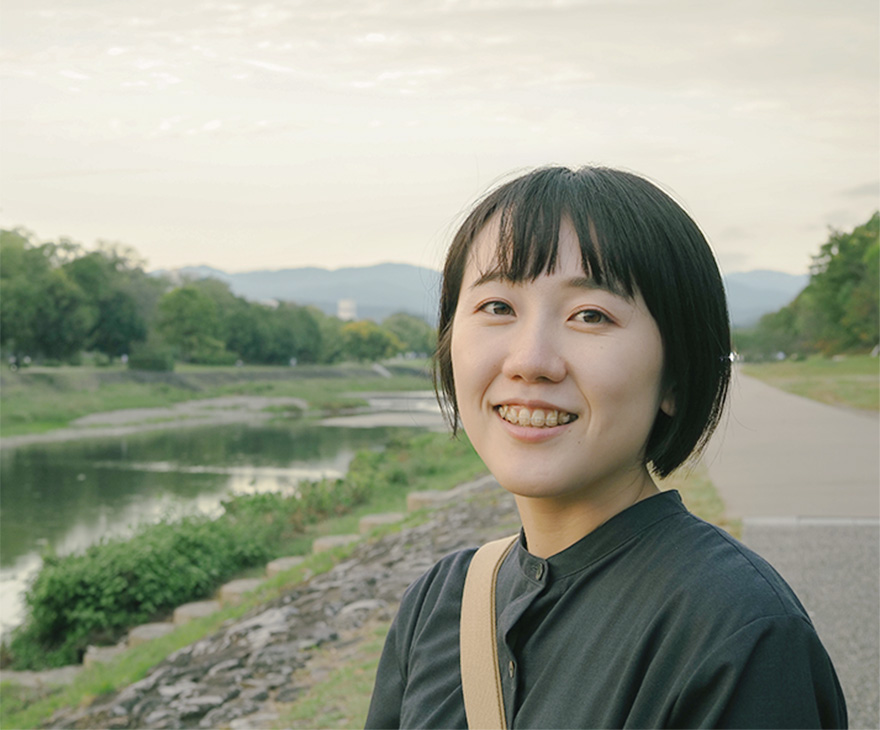

Kana Sonoda
Portfolio
WORKS
SKILLS
-
- HTML/CSS
- 基本的なWebページのレイアウトをコーディングできます。
FlexboxやGridを用いた配置、スマートフォン対応のレスポンシブデザインにも対応可能です。
-
- JavaScript
- 基本的なコードの書き方を学び、jQueryを使って簡単な動きのある機能を実装できます。
例えば、スライドショー、ハンバーガーメニュー、クリックで表示が変わる仕組みなどを作りました。
-
- Photoshop
- Webサイトのデザインカンプの作成や、写真の明るさ・サイズ調整、トリミングなどの基本的な編集に使用しています。
ABOUT

園田 佳那
そのだ かな
1998年滋賀県生まれ。現在は医療事務として働きながら、Web制作を学びました。 視覚や体感を通じて伝えるモノづくりに魅了され、Web制作の仕事に挑戦したいです。